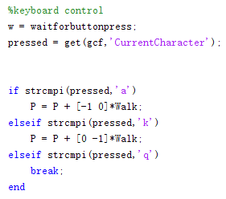

1.[X, Y] = meshgrid[x, y]
x = 3:5; y = 6:7;
then
X = [3 4 5; 3 4 5]
Y = [6 6 6; 7 7 7]
2.ZI = interp2(x, y, Z, XI, YI)
Interpolate ZI(XI, YI) using the point datas: (x, y, Z). The x and y is like 2:5.
I usually use this form: interp2(im, X, Y, 'linear', 0);
After using this, we can visulized it using this command:
surf(XI, YI, ZI);
the cool way to write figure related commands like the image above:
figure(1), hold off, plot(x, y, 'r*'), hold on, plot(x(inliers), y(inliers), 'g*')
figure(1), axis([-5 5 -3 3]), axis equal

img_r = squeeze(img(:,:,1));
[THETA, PHI] = meshgrid(theta, phi);
R = ones(size(THETA));
[X, Y, Z] = sph2cart(THETA, PHI, R);
x = [63 186 54 190 63];
y = [60 60 209 204 60];
bw = poly2mask(x,y,256,256);
[x y] = deal(10, 15);
[x y] = deal(10); equals to [x y] = deal(10, 10);
c=bsxfun(@plus,a,b)
a = [1 2 3]
b = [4 5 6]'
c = [1+4 1+5 1+6]
[2+4 2+5 2+6]
[3+4 3+5 3+6]